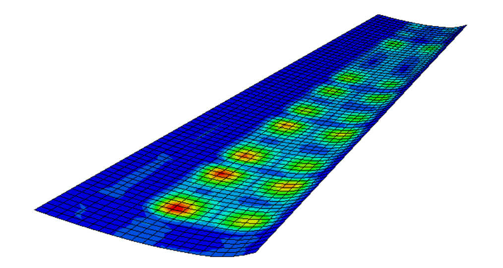
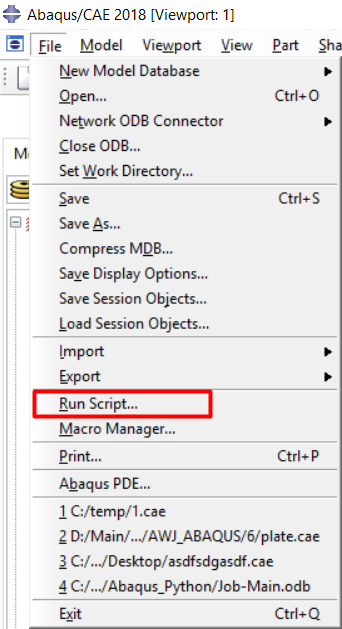

Automatization of Abaqus FEA using python
In this paper I will describe how to automate Abaqus Finite Element Analyses using python script on example of optimization wing skin panel parameters.

Contents
- Introduction
- Initial data
- Work in GUI
- Scripts generation and formatting
- Main file adjustment
- Conclusion
Introduction
The main point of this whole work is to replace action sequence in GUI by formatted scripts. By default, Abaqus write each and every setups by sequence in a file. This file generated automatically in default working directory and have format of .jnl. This exact file we need to make a script from it, by simply changing it’s format to .py. After processing all steps in GUI we could just this file as a script and it will reprocess all the steps we made manually. Actually, it will already be ‘scripting’. However, a few nuances shall be mention. But I will describe them little bit later. First, I will tell how to run this scrips.
Abaqus software allows to run a scrips in two ways: from GUI and from command line. From GUI it could be run from menu ‘File’ -> ‘Run script’ 
or from command line above:

From command line there is to commands to run a script - in GUI and without GUI:
abaqus cae = sctipt_name
abaqus cae noGUI = sctipt_name
The first one will open GUI and then run script there, the second one will run a script without GUI. Which is pretty obvious, whats is not that obvious, is how Abaqus will produce any result from running a script without GUI. And this is first thing about this scripting model. This .jnl file contains sequence of all actions in each steps BEFORE visualization step. So basically, this sequence just setup job for submit and run it. On this step Abaqus will create results and hold it in format of .ODB - Object Database. And to see these results we need to open GUI, import Database and only then results will appears in visualization menu. Or, we need to create one more script for writing results in file format, that could be opened by hands and parsed by python.
One more thing about this .jnl file. It contains sequence of EACH action, that was made in GUI. What does it mean? Let’s take an example. You setup one of geometrical sizes as 54 mm, then you realized it was a mistake and changed in to 45 mm. In .jnl file Abaqus will write not just this size as 45 mm, it will write both actions, and setting this size as 54 mm, and then changing it to 45 mm.
Initial data
I will describe this method at example of optimization Wing skin panel parameters. This skin panel was taken from one of my previous projects, so I will import model from there. Here is some initial values, such as geometrical sizes, inner sizes parameters and materials’ characteristics.
| Root chord, mm | 1925 |
|---|---|
| Edge chord, mm | 1025 |
| Console length | 270 |
| Lead edge, %* | 5 | Back edge, %5 | 95 |
|---|---|---|---|
| 1 rib opening, %** | 6,5 | 1 rib ending, %** | 8 |
| 2 rib opening, %** | 26,5 | 2 rib ending, %** | 28 |
| 3 rib opening, %** | 47 | 3 rib ending, %** | 48,5 |
| 4 rib opening, %** | 63,5 | 4 rib ending, %** | 65 |
| 5 rib opening, %** | 90 | 5 rib ending, %** | 91,5 |
| Tension elastic modulus | Et, GPa | 58 |
|---|---|---|
| Compression elastic modulus | Ec, GPa | 57,8 |
| Transversal elastic modulus | G, GPa | 10,49 |
| Tension critical stress along fiber | Ft1, MPa | 904 |
| Compression critical stress along fiber | Fc1, MPa | 128 |
| Tension critical stress across fiber | Ft2, MPa | 904 |
| Compression critical stress across fiber | Fc2, MPa | 128 |
| Transversal critical stress | F12, MPa | 176 |
| Poisson coefficient | nu_xy | 0,06 |
| Mono-layer thickness | d0, mm | 0,42 |
| Density | po, kg/mm3 | 1335 |